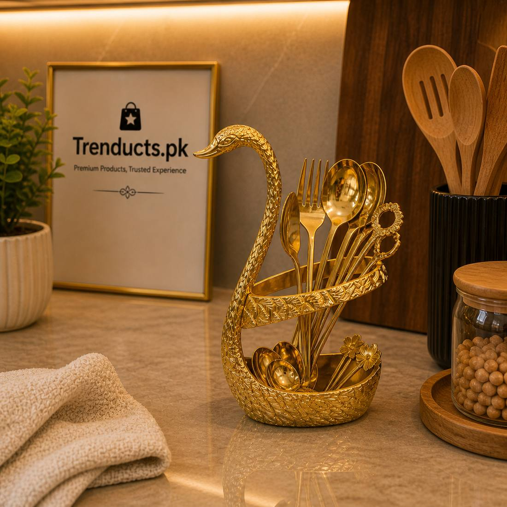
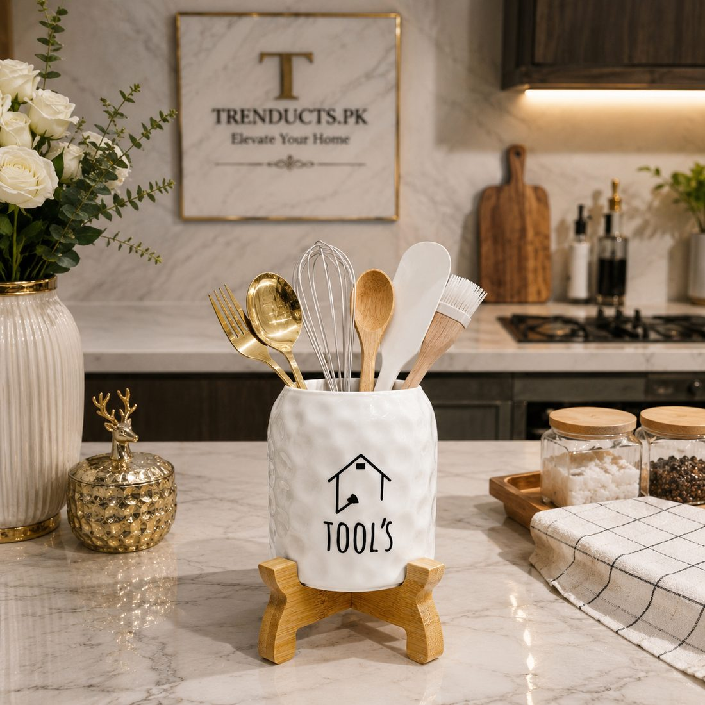

A home dawat in Pakistan rarely follows a seating plan. Guests arrive in waves, food goes onto a long table or the dining table pushed against the wall, and everyone serves themselves. It is warm and informal, which is exactly why people love it. It is also why the same small problem repeats at almost every gathering: someone is standing with a plate of biryani and no spoon.
Cutlery seems like a minor detail, but a well-placed caddy keeps a buffet moving and saves the host from running back and forth to the kitchen. Here is how to set it up properly.
Start with the flow of the line
Before you place a single dish, decide where guests will begin. Plates go at the start. Main dishes and rice follow, then salads and raita, then bread. Cutlery and napkins go at the end of the line, not the start.
This feels odd at first, but it makes sense. A guest carrying a plate, a spoon, a fork and a napkin while trying to serve rice has one hand too few. Picking up cutlery last means both hands are free while serving.
If your table is against a wall, the line runs in one direction. If guests can walk around it, set up two identical lines on either side, each with its own cutlery caddy.
How many spoons do you really need
Count guests and add a margin. Desi food tends to involve a spoon for nearly everything, and people often take a second spoon for dessert. Plan for about two spoons per guest and one fork per guest, plus spares. Keep a second batch washed and ready in the kitchen rather than putting everything out at once.

Choosing a caddy
A good cutlery holder does three things: it keeps handles upright and within reach, it separates spoons from forks, and it does not tip over when someone pulls a spoon out quickly.
- Look for a weighted or wide base, especially for a crowded table where elbows bump things.
- Multiple compartments let you separate dinner spoons, dessert spoons and forks.
- Ceramic and metal holders look better on a dawat table than plastic and are easier to wash.
- Decorative holders shaped like animals or with a gold finish double as table decor between events.
Serving spoons are a separate job
Every dish needs its own serving spoon, and these should stay with the dish, not in the caddy. Place a small saucer or spoon rest next to each pot so the serving spoon does not drip gravy across the tablecloth. For rice and biryani, a flat wide spoon works better than a ladle.
Napkins and the little extras
Keep tissues or paper napkins next to the cutlery caddy. A small bowl for used toothpicks, a jug of water with glasses and a tray of sliced lemons and green chillies at the end of the line all reduce the number of times guests need to ask for something.

Keep the table tidy during the event
Assign one family member to check the buffet every twenty minutes or so: refill cutlery, wipe spills, bring out fresh roti and swap empty dishes. A tidy table encourages guests to go back for seconds and keeps the evening relaxed.
Everyday use between dawats
A good spoon holder does not need to sit in a cupboard until the next wedding season. Many families keep one on the dining table for daily use so children can fetch their own spoons, or by the stove for cooking spoons and spatulas. If you want something that looks smart enough for both, browse the cutlery holders on Trenducts.pk, which ships across Pakistan.
A quick buffet checklist
- Plates at the start, cutlery and napkins at the end.
- Two spoons per guest, spares ready in the kitchen.
- A serving spoon and spoon rest for every dish.
- One person checks the table regularly.
With these basics in place, your next dawat will run more smoothly, and you might actually get to eat while the food is still hot.